IES Valle del Alberche

🗺️ Ubicación en el currículo
Este tema pertenece al Bloque A. Campo gravitatorio del currículo de Física de 2º de Bachillerato (Decreto 40/2022, BOCYL-D-30092022-4).
En este tema estudiaremos: el carácter central de la fuerza gravitatoria, el momento angular de una partícula, su conservación en campos de fuerzas centrales, la relación con la segunda ley de Kepler, el plano orbital y sus aplicaciones al movimiento de planetas y satélites.
🎯 Objetivos de aprendizaje
- Comprender el concepto de fuerza central y reconocer la fuerza gravitatoria como un ejemplo de ella.
- Definir el momento angular de una partícula y calcularlo en distintas situaciones (órbita circular, elíptica, etc.).
- Demostrar que el momento angular se conserva cuando la fuerza es central.
- Relacionar la conservación del momento angular con la segunda ley de Kepler (ley de las áreas).
- Deducir que el movimiento bajo una fuerza central es plano.
- Aplicar la conservación del momento angular para resolver problemas de órbitas elípticas (perihelio y afelio) y circulares.
- Analizar el plano orbital en órbitas circulares y elípticas y justificar por qué debe contener al centro de fuerzas.
📚 Contenido teórico
1 Fuerzas centrales.
Una fuerza es central cuando su línea de acción pasa siempre por un punto fijo llamado centro de fuerzas y su módulo depende únicamente de la distancia a dicho centro:
La fuerza gravitatoria es un ejemplo de fuerza central. El signo negativo indica que es atractiva (apunta hacia el centro de fuerzas).
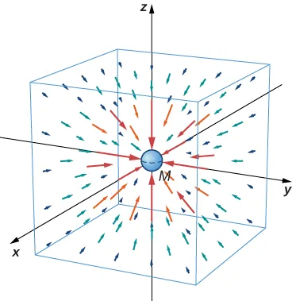
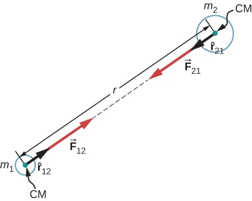
2 Momento angular de una partícula.
El momento angular \(\vec L\) de una partícula de masa \(m\) que se mueve con velocidad \(\vec v\), respecto a un punto \(O\), se define como el producto vectorial de su vector de posición \(\vec r\) por su momento lineal \(\vec p = m\vec v\):
Su módulo es \(L = m\,r\,v\,\text{sen}\,\theta\), donde \(\theta\) es el ángulo entre \(\vec r\) y \(\vec v\). Sus unidades en el S.I. son \(\text{kg}\cdot\text{m}^2\cdot\text{s}^{-1}\).
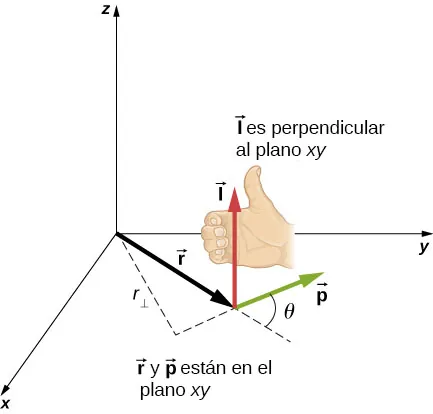
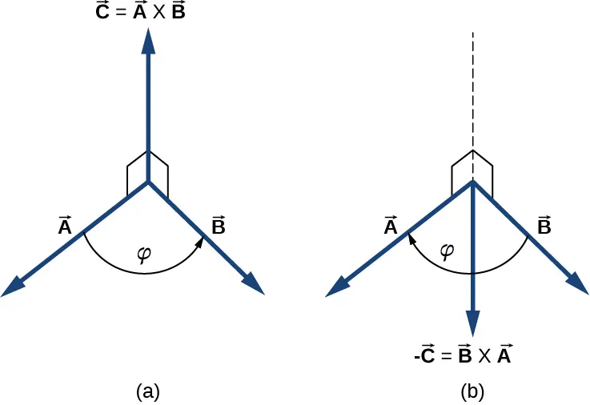
3 Teorema del momento angular.
La variación temporal del momento angular de una partícula es igual al momento de la fuerza neta (torque) que actúa sobre ella, respecto al mismo punto \(O\):
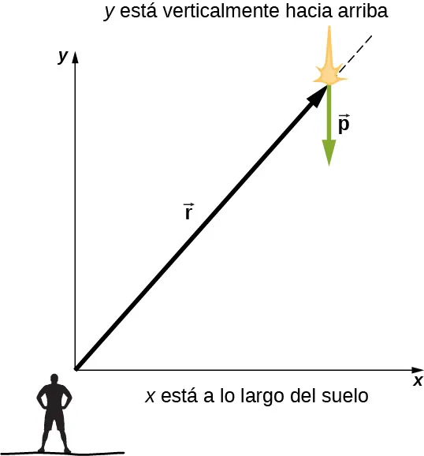
4 Conservación del momento angular.
Si la fuerza que actúa sobre la partícula es central, entonces \(\vec r\) y \(\vec F\) son paralelos, por lo que el producto vectorial es nulo: \(\vec M = \vec r \times \vec F = 0\). En consecuencia:
El momento angular se conserva en todo campo de fuerzas centrales.
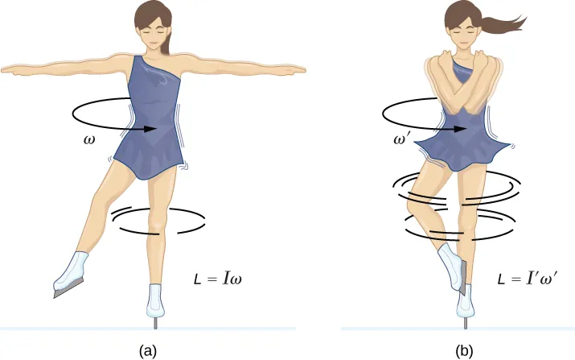
5 Movimiento plano.
Como \(\vec L = \vec r \times m\vec v\) es un vector constante y perpendicular al plano formado por \(\vec r\) y \(\vec v\), la partícula se mueve siempre en un plano fijo perpendicular a \(\vec L\). Este plano contiene al centro de fuerzas.
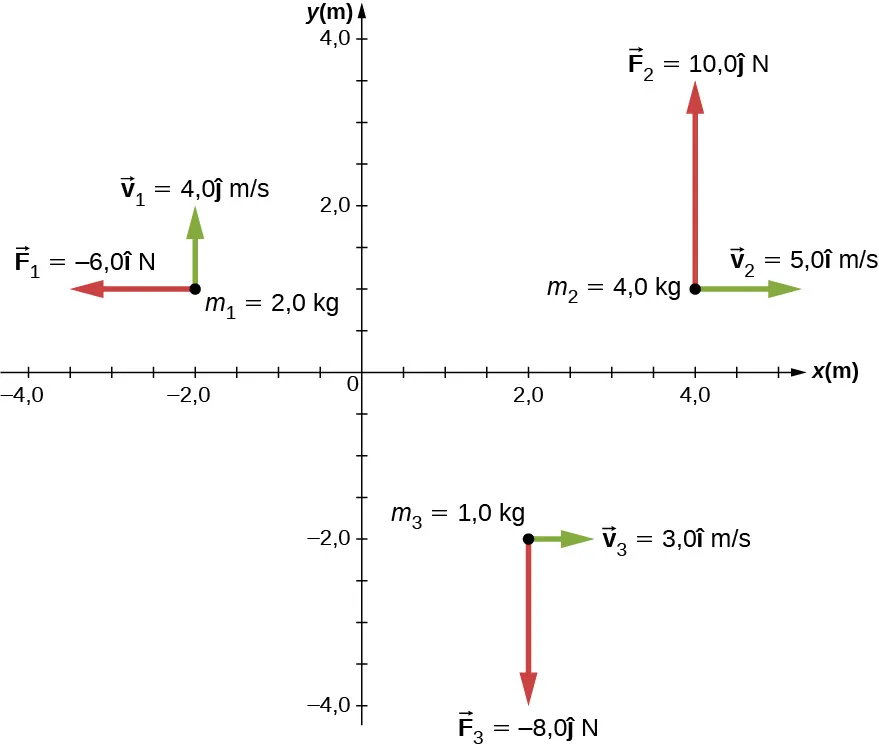
6 Relación con la segunda ley de Kepler.
La conservación del momento angular implica que la velocidad areolar (área barrida por el radio vector por unidad de tiempo) es constante:
Esta es precisamente la segunda ley de Kepler: el radio vector que une el Sol con un planeta barre áreas iguales en tiempos iguales.
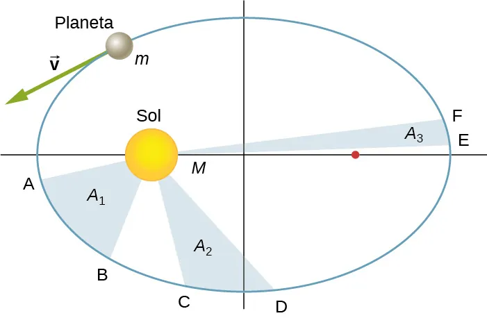
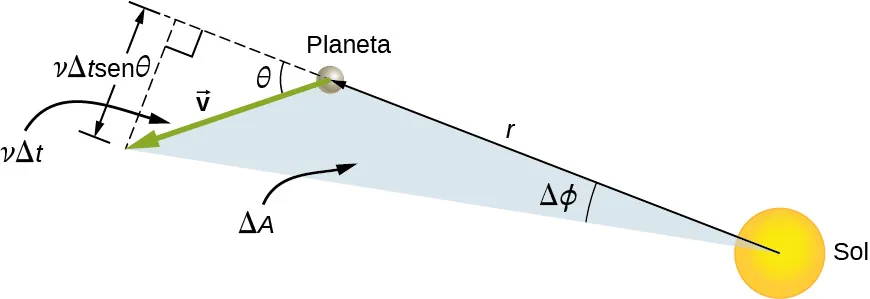
7 Órbitas elípticas: perihelio y afelio.
En los puntos de máximo acercamiento (perihelio) y máximo alejamiento (afelio), el vector de posición y la velocidad son perpendiculares. Por tanto, la conservación del momento angular se escribe:
donde \(r_p\) y \(v_p\) son la distancia y la velocidad en el perihelio, y \(r_a\) y \(v_a\) en el afelio.
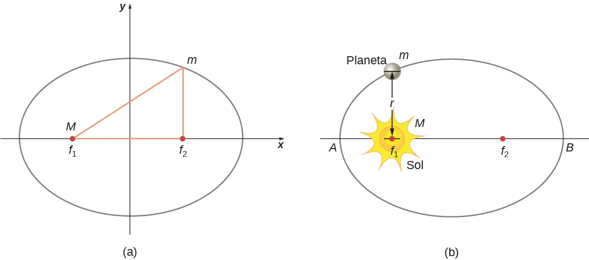
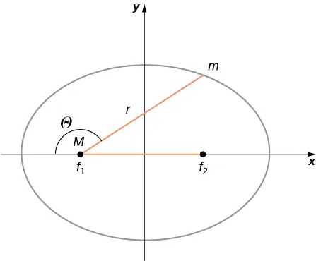
8 Órbitas circulares.
En una órbita circular, la velocidad es siempre perpendicular al radio, por lo que el módulo del momento angular es:
y se conserva constante en módulo, dirección y sentido a lo largo de toda la órbita.
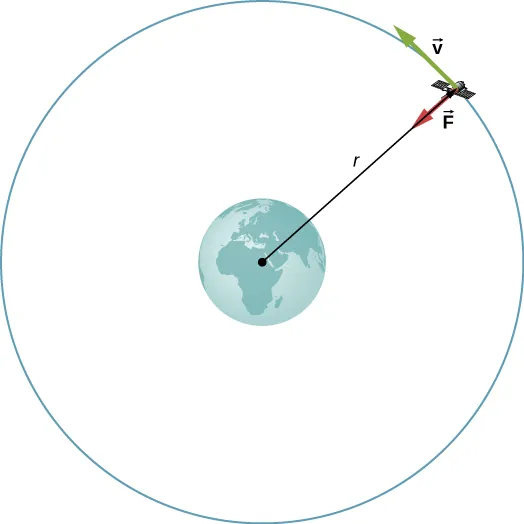
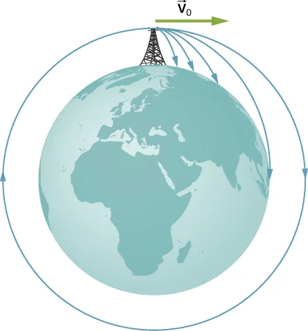
🧮 Análisis de las fórmulas del tema A3
Recogemos en una tabla las expresiones clave del tema, con su significado físico, las variables implicadas y las condiciones de aplicación:
| Fórmula | Significado físico | Variables y unidades | Condiciones de aplicación |
|---|---|---|---|
| \(\vec L = \vec r \times m\vec v\) | Definición de momento angular de una partícula. | \(\vec L\) en \(\text{kg}\cdot\text{m}^2/\text{s}\); \(\vec r\) en m; \(\vec v\) en m/s. | Respecto a un punto \(O\) fijo. |
| \(\frac{d\vec L}{dt} = \vec r \times \vec F\) | Teorema del momento angular (variación del momento angular = torque). | \(\vec M\) en \(\text{N}\cdot\text{m}\). | Válido en cualquier sistema inercial. |
| \(\vec L = \text{constante}\) | Conservación del momento angular en campos de fuerzas centrales. | — | Fuerza central (\(\vec F \parallel \vec r\)). |
| \(r_p v_p = r_a v_a\) | Relación de velocidades en perihelio y afelio de una órbita elíptica. | \(r\) en m; \(v\) en m/s. | Órbita elíptica bajo fuerza central; \(\vec v \perp \vec r\) en los ápsides. |
| \(L = mrv\) | Momento angular en órbita circular. | \(m\) en kg; \(r\) en m; \(v\) en m/s. | Órbita circular: \(\vec v \perp \vec r\). |
| \(\frac{dA}{dt} = \frac{L}{2m}\) | Velocidad areolar constante (2.ª ley de Kepler). | \(\frac{dA}{dt}\) en \(\text{m}^2/\text{s}\). | Fuerza central; movimiento plano. |
🔭 Problemas resueltos de EBAU — Castilla y León y otras comunidades (Tema A3) Pulsame
Selección de 10 problemas de las pruebas de acceso a la universidad, priorizando Castilla y León y completando con otras comunidades. Todos ellos están relacionados con el tema A3 (momento angular y fuerzas centrales). Se indica la comunidad, el año, la convocatoria y el número de problema.
Ejercicio 1 Plano de una órbita circular bajo una fuerza central
¿Puede un satélite describir una órbita circular alrededor de un planeta en un plano paralelo al ecuatorial? Razone y justifique la respuesta. (1 punto)
[Imagen adjunta: planeta esférico y trayectoria circular en un plano paralelo al ecuatorial, desplazado del centro del planeta.]
Ejercicio 2 Satélite en órbita elíptica: conservación del momento angular
Un satélite de comunicaciones orbita alrededor de la Tierra en una trayectoria elíptica cuyo apogeo se encuentra a 39.700 km de altitud sobre la superficie de la Tierra. Si el satélite da una vuelta completa cada 12 h, determine:
a) La altura sobre la superficie terrestre a la que se encontrará el satélite en el perigeo y la relación entre sus velocidades en el perigeo y en el apogeo (\(v_p/v_a\)).
b) La velocidad del satélite en el perigeo y la velocidad hasta la que habría que reducir al satélite para que pasase de una órbita elíptica a una órbita circular de radio igual a la distancia al perigeo.
Datos: \(G=6{,}67\cdot10^{-11}\,\text{N}\cdot\text{m}^2\cdot\text{kg}^{-2}\); \(M_T=5{,}97\cdot10^{24}\,\text{kg}\); \(R_T=6{,}37\cdot10^{6}\,\text{m}\).
Ejercicio 3 Sicorax: momento angular y velocidad orbital mínima
Sicorax es un satélite de Urano. La distancia entre ambos oscila entre 5,8 y 18,5 millones de km.
a) Calcular el trabajo realizado por el campo gravitatorio en el tránsito del punto más cercano al más alejado de la órbita del satélite alrededor del planeta.
b) ¿En qué punto de la trayectoria del satélite alrededor de Urano será mínima la velocidad orbital?
c) Calcular la velocidad orbital mínima referida en el apartado b), sabiendo que la energía mecánica del satélite es \(-4{,}8\cdot10^{23}\,\text{J}\).
Datos: \(M_U=8{,}7\cdot10^{25}\,\text{kg}\); \(M_S=2\cdot10^{18}\,\text{kg}\).
Ejercicio 4 Fuerza central y momento angular en el campo gravitatorio
En un cierto punto A la intensidad de la gravedad es la mitad que en la superficie de la Tierra, mientras que en otro punto B es la cuarta parte. Determine la distancia de ambos puntos al centro de la Tierra y la velocidad mínima que debe llevar un objeto en A para poder alcanzar el punto B.
Ejercicio 5 Nave en órbita circular: momento angular y energía
Una nave espacial describe una órbita circular en torno a un planeta esférico. La velocidad orbital de la nave es de \(25\,000\,\text{km/h}\) y tarda 5 h en dar una vuelta completa.
a) Determinar el radio de la órbita y la masa del planeta.
b) Si el radio del planeta es \(R = 5900\,\text{km}\), calcular la aceleración de la gravedad en su superficie.
Ejercicio 6 Satélite geoestacionario SpainSat NG-I
El satélite español de comunicaciones seguras SpainSat NG-I, de 6 toneladas, orbitará sobre el ecuador terrestre con un periodo de revolución igual al de la rotación de la Tierra.
a) ¿A qué altura sobre la superficie de la Tierra orbitará el satélite?
b) ¿Cuál será la energía total del satélite en órbita?
c) ¿Cuál es el trabajo necesario para llevar el satélite hasta esa altura?
Ejercicio 7 Órbita geoestacionaria del satélite Astra 2C
El satélite Astra 2C, de masa 6000 kg, describe una órbita circular geoestacionaria.
a) Calcule la altura a la que orbita respecto a la superficie de la Tierra y la velocidad con la que se mueve.
b) Calcule la energía necesaria para llevar al Astra 2C desde la superficie de la Tierra hasta su órbita.
Ejercicio 8 Sonda en órbita circular: momento angular y fuerzas centrales
Una sonda espacial de 500 kg describe una trayectoria circular de radio \(r\) en torno a Marte, realizando una revolución cada 100 min. La energía mecánica de la sonda en órbita es \(-3{,}16\cdot10^{9}\,\text{J}\).
a) Deduzca la expresión del periodo de la órbita en función de \(G\), \(M_M\) y \(r\).
b) Calcule el radio de la órbita y la masa de Marte.
Ejercicio 9 Satélite en órbita circular: periodo y velocidad orbital
Un satélite de masa \(m=300\,\text{kg}\) se mueve en órbita circular alrededor de la Tierra a una altura de \(50\,000\,\text{km}\) sobre la superficie terrestre.
a) ¿Cuál es la fuerza gravitatoria que ejerce la Tierra sobre el satélite?
b) ¿Cuál es la velocidad orbital del satélite?
c) ¿Cuál es el periodo orbital del satélite?
Ejercicio 10 Radio orbital, periodo y escape de un satélite
Se ha situado un satélite de comunicaciones de masa \(1500\,\text{kg}\) en una órbita circular alrededor de la Tierra. La energía mecánica del satélite en su órbita es \(-4{,}51\cdot10^{10}\,\text{J}\).
a) Calcule el radio de la órbita y la velocidad del satélite en ella.
b) ¿Cuántas vueltas alrededor de la Tierra da el satélite en un día?
c) Determine la velocidad de escape del satélite desde su órbita.
Domina el momento angular y las fuerzas centrales para la EBAU.
(Los detalles sobre lo que entra en las pruebas escritas se publicarán periódicamente en M.Teams).